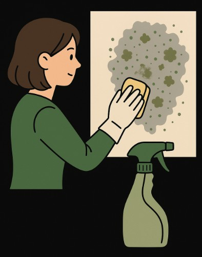
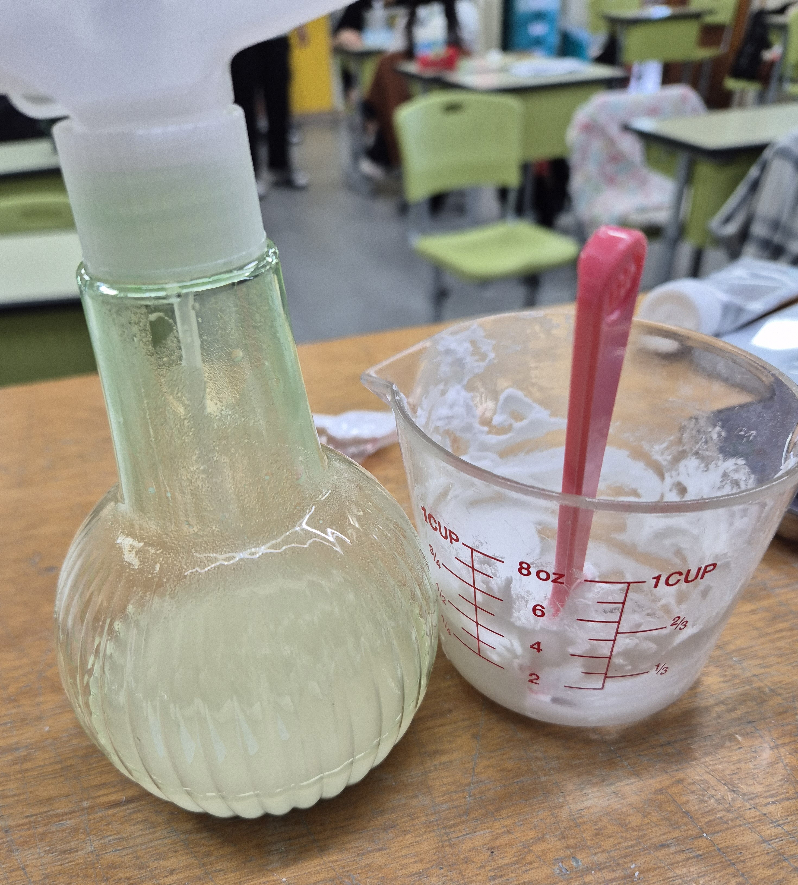
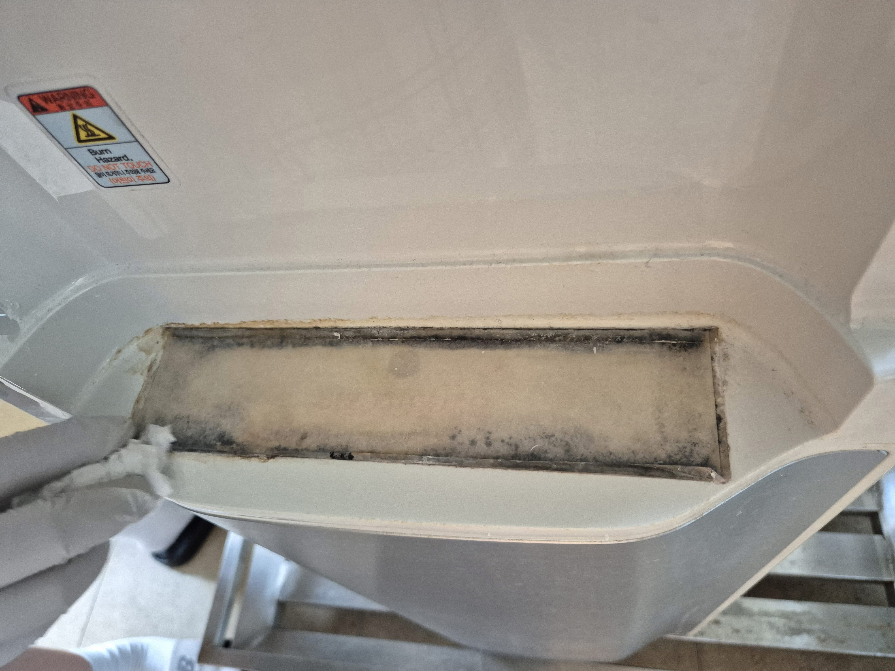
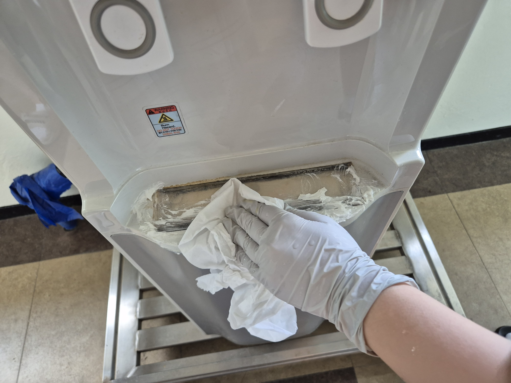
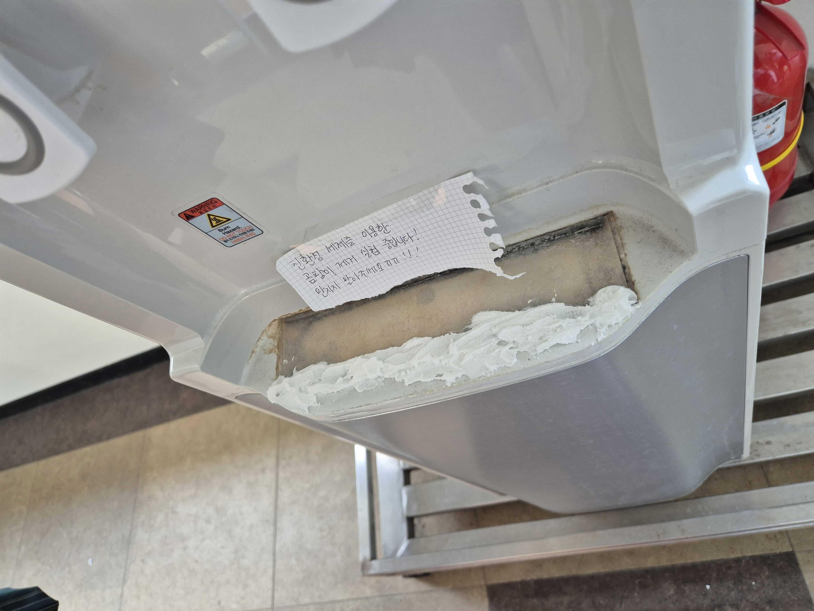
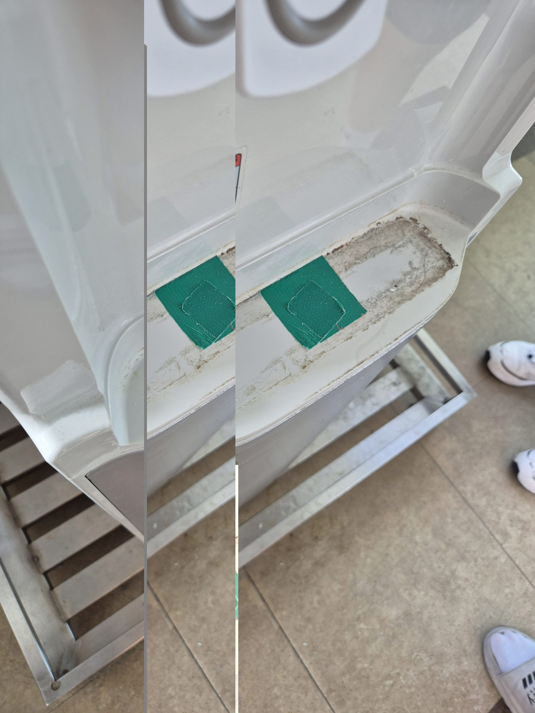

곰팡이 제거 실험
친환경 세제를 이용한 곰팡이 제거 실험을 통해 안전하고 지속 가능한 청소법 탐색

친환경 세제 재료
친환경 세제 재료는 다음과 같습니다.
- 식초(CH₃COOH) – 약산성으로 곰팡이의 세포벽을 손상시켜 곰팡이 억제
- 알코올 – 살균 및 단백질 변성 작용
- 베이킹소다(NaHCO₃) – 약알칼리성으로 곰팡이의 산성 노폐물 중화 및 세정
- 치약 – 연마제를 통한 물리적 제거 보조
친환경 세제 재료의 효과와 과학적 원리
각 재료는 곰팡이의 구조와 생장 환경을 파괴하는 과학적 근거가 있는 물질들입니다.
A. 식초 (CH₃COOH)
- 약산성(pH 2~3) – 곰팡이의 세포벽을 손상시키고 생장 억제
- 아세트산 – 곰팡이의 단백질 및 세포막을 변성시킴
- 곰팡이 포자가 좋아하지 않는 산성 환경을 만들어 번식을 어렵게 함
- 화학 성분이 적고 인체에 안전하여 실내 청소에 적합
B. 베이킹소다 (NaHCO₃)
- 약알칼리성(pH 8.3) 으로 곰팡이의 산성 노폐물과 반응해 중화
- 이산화탄소(CO₂) 발생 – 기포가 곰팡이 사이로 침투하여 분해를 도움
- 미세한 연마 입자가 있어 흡착된 곰팡이를 물리적으로 제거하는 데 효과적
- 악취 흡착력이 뛰어나 청소 후 냄새 억제 효과
C. 알코올 (에탄올)
- 살균 효과 – 곰팡이 세포 단백질 변성 및 조직 파괴
- 수분 제거 능력 – 곰팡이는 습기에서 자라므로 건조 효과가 강력한 억제 요인
- 휘발성이 높아 남은 잔여물이 적어 후처리 용이
- 세균 및 곰팡이를 동시에 억제하는 광범위 살균제 역할
D. 치약
- 이산화규소(SiO₂), 탄산칼슘(CaCO₃) 등 연마 입자가 표면 오염을 긁어내는 역할
- 베이킹소다 성분 포함 – 알칼리성이 곰팡이 표면 침투 및 분해에 도움
- 점성 있는 질감 덕분에 표면에 오래 붙어 곰팡이와 접촉 시간 증가
- 곰팡이의 번식에 필요한 유기물·pH 조건을 제거함
이처럼 각 재료는 서로 다른 방식(산성·알칼리성·연마·살균·건조 작용)으로 곰팡이 제거에 기여하며,
화학 세제를 사용하지 않아도 충분한 세척 효과를 제공할 수 있습니다.
친환경 세제 만드는 방법
친환경 세제 제조 과정은 다음과 같습니다.
- 1) 식초 : 알코올 : 베이킹소다 = 1 : 1 : 1 로 혼합하여 세제 제작
- 2) 혹은 치약 : 베이킹소다 = 1 : 2 비율로 혼합하여 세정 크림 제작
- 3) 만든 친환경 세제를 곰팡이 부위에 넉넉히 도포
- 4) 약 1시간 방치 후 스펀지 혹은 티슈로 닦아 제거

곰팡이 제거 실험 과정
학교 정수기 하단부에 실제로 곰팡이가 끼어 있어 친환경 세제를 도포하고 제거 실험을 진행했습니다.
곰팡이가 잘 보이는 부위에 세제를 충분히 바른 뒤 1시간 정도 기다렸습니다.



실험 결과
세제를 도포한 후 곰팡이 덩어리가 분해되며 표면에서 쉽게 떨어졌습니다.
특히 베이킹소다의 연마 작용과 식초의 약산성 특성이 함께 작용하여
화학 세제를 사용하지 않고도 충분히 곰팡이를 제거할 수 있음을 확인했습니다.

종합 결론
친환경 재료를 활용한 세제는 안전하고 학교 환경에도 적합하며,
지속 가능하고 누구나 쉽게 실천 가능한 청소 방법임을 확인했습니다.
작은 실험이 만든 큰 변화
다음번에는 학교의 다른 오염된 공간에도 친환경 세제를 적용해보고자 합니다.